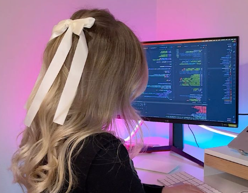

Quem é Celeste?
É um prazer conhecê-los. Sou uma programadora plena, com experiência tanto em Front End quanto em Networks. Minha jornada na programação teve início no Front End, onde meu interesse pelo design se destacou. Ao longo do tempo, desenvolvi habilidades nessa área, inclusive criando sites para gerar renda adicional. Sou apaixonada por redes e pelo mundo do Wi-Fi, assim como a inventora Hedy Lamarr, cuja história e contribuições me inspiram profundamente. Mantenho-me constantemente envolvida no desenvolvimento do Front End dos meus projetos, garantindo tanto a estética quanto a usabilidade, enquanto permaneço atenta à segurança e à defesa contra ameaças como DDos. Minha linguagem principal é JAVA, mas também tenho afinidade com outras linguagens, como C#, C++, Assembly, Python, JavaScript e PHP. Tenho grande apreço pelas tecnologias Spring Framework, Hibernate, Maven, Laravel, Next, Nuxt e Vue. Estou comprometida em expandir constantemente meu conhecimento e contribuir de forma significativa para os projetos em que estou envolvida. Uso basatante os ediotores Uso bastante os editores Lunarvim, Visual Studio Code e Eclipse para meu desenvolvimento, também sou fã de linux.
Sou Anônima?
Por enquanto sim, mas falando sobre mim, eu gosto de medicina, estou cursando enfermagem e indo para medicina, além da programação essa é minha outra metade, vivo cambaleando pelos dois, já sou formada em técnico de enfermagem agora minha meta é ser cirurgiã vascular, tenho 19 anos, e estou abrindo essa empresa de proteção. Espero ajudar o website de vocês, mais para frente teremos mais serviços disponíveis, mas por enquanto a meta é proteger de ataques, e reduzir o "estresse" causado por ataques de empresas maliciosas.
